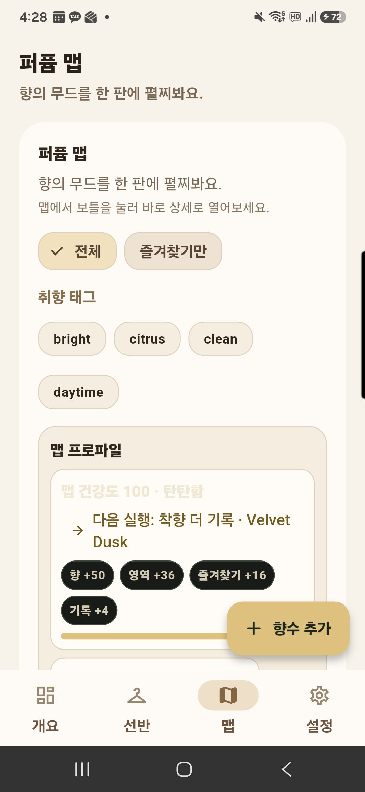
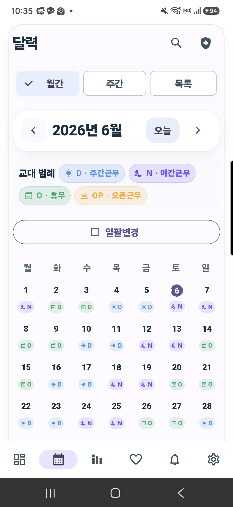
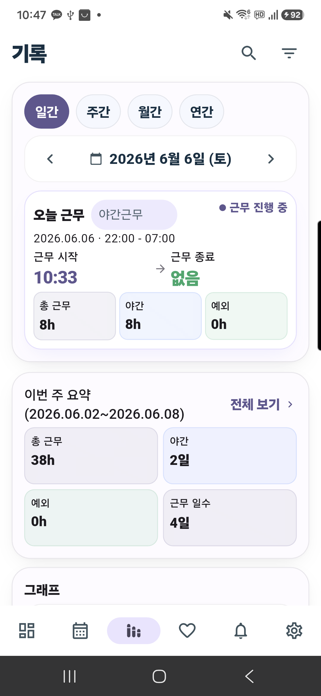
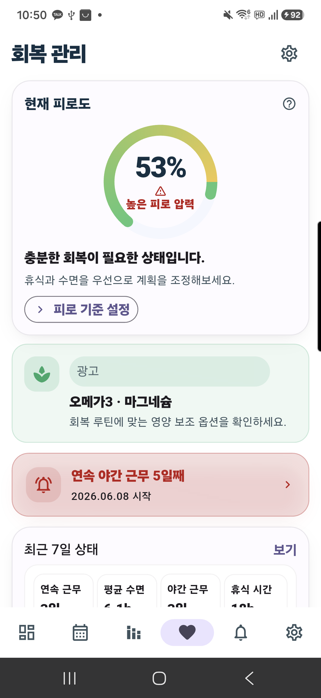

패턴 설정
반복 주기나 날짜를 직접 선택해 근무표를 만듭니다.
설정부터 회복까지, 한 흐름으로
반복 주기나 날짜를 직접 선택해 근무표를 만듭니다.
근무 코드와 시간, 다음 교대를 바로 확인합니다.
출퇴근, 휴게, 연장근무와 메모를 남깁니다.
월간 기록, 수입과 회복 신호를 함께 봅니다.
출시 버전과 같은 실제 화면




필요한 정보는 선명하게, 조작은 가볍게
3/3/3, 2/2/2와 직접 날짜 설정을 지원합니다.
체크인·체크아웃, 휴게, 일시정지와 연장근무를 기록합니다.
월간 리포트와 근무확인서를 정리해 내보냅니다.
시스템 언어를 따르거나 앱에서 직접 변경할 수 있습니다.
핵심 일정과 기록은 로컬에 저장되며 계정 없이 사용할 수 있습니다. WorkLog은 Android와 iOS에서 Google AdMob 광고를 사용하지만 광고 연결이 없어도 핵심 일정 기능은 계속 동작합니다.